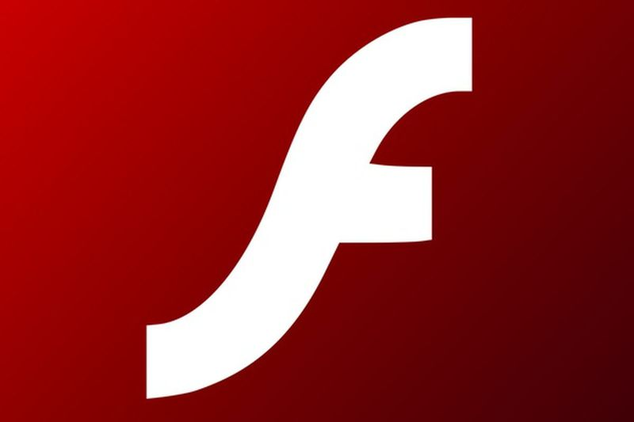
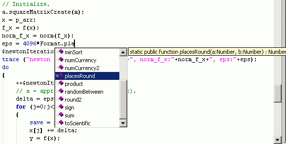

Adobe Flash(ყოფილი Macromedia Flash) - მულტიმედიური პლატფორმა,რომელიც გამოიყენება
რეკლამებისათვის, თამაშებისათვის და Flash-ანიმაციისათვის. უკანასკნელ პერიოდში დაიწყო
მისი გამოყენება ინტერნეტ-დამატებებისათვის(RIA).
Flash მანიპულირებას უკეთებს ვექტორულ და რასტრულ გრაფიკას და უზრუნველყოფს
აუდიოსა და ვიდეოს ორმხრივ დინებას, ის შეიცავს სკრიფტინგის ენას რომელსაც ActionScript
ჰქვია. გამოიყენება თითქმის ყველა მთავარ ბრაუზერში, ძოგიერთ ტელეფონსა და ელექტრონულ
მოწყობილობაში. რამდენიმე პროგრამას, სისტემას და მოწყობილობას, რომელიც შეიცავს Adobe
Flash players-ს, აქვს საშუალება გამოსახოს Flash ავტომატური მოქმედების უზრუნველყოფა ასევე ხდება JavaScript Flash ენით (JSFL).
აქვს კომპიუტერული აქსესუარების, მაუსის, კლავიატურის, მიკროფონისა თუ კამერის მხარდაჭერა

SWF ფორმატის ფაილებს, რომლებსაც ტრადიციულად ეძახიან ფლეშ ფილმებს(Flash movies), ან ფლეშ თამაშებს(Flash games),
აქვთ swf ფაილური გაფართოება და შესაძლოა ისინი გამოყენებულ იქნან ვებ კომპონენტებად.Flash Video(FVL)გაილებს აქვთ .flv
ფაილური გაფართოვება
Copyright © 2013 site created by: Luka Sheklashvili